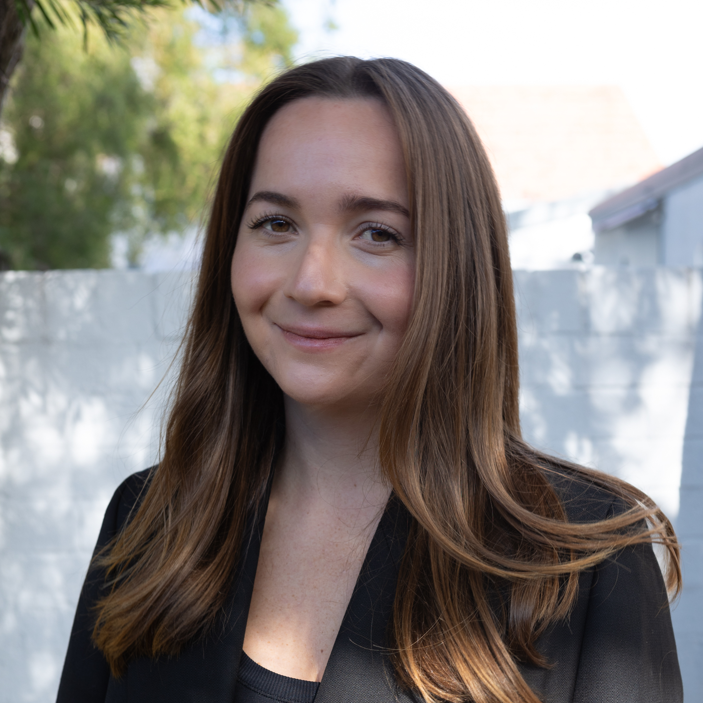

My name is Kim Bente and I am a
postdoctoral research fellow in Computational Antarctic Geophysics at the School of Natural
Sciences, University of Tasmania, in the Compute
Antarctic research group, led by Professor Anya
Reading. I completed my PhD in Machine Learning at the School of Computer Science, University of
Sydney, where I was supervised by Prof Fabio Ramos
and A/Prof Roman Marchant, and a member of the DARE (Data Analytics for Resources and Environments) ARC Training
Centre, an Industrial Transformation training centre.
My research interests are
centred around using probabilistic machine learning and statistical computing methods to address Climate
Science problems. I am particularly interested in the quantification of uncertainty to inform high-stakes
decision in the climate domain. I am currently working on the application Bayesian Optimisation to
Antarctic research problems, including sensor network design, data fusion and ice core drilling site
determination.
I have gained extensive experience on interdisciplinary research projects, most notably collaborating with
Nutrition and Dietetics research, and also working on educational data, as well as criminology data.
I have completed the Master of Data Science [with high distinction] from the University of Sydney
in 2020 and I hold a Bachelor of Science from the Technical University Munich, in Management & Technology,
specialising in Chemical Engineering and Finance.
Please contact me via kim.bente@utas.edu.au
Check out my GitHub repositories for
preprocessing pipelines of
Antarctic datasets (e.g. Bedmap3 points, Bedmap maps, BedMachine, RACMO 2.4, GRACE-FO, MODIS MOA, NASA's
MEaSUREs datasets), Physics-Informed ML models built in PyTorch, Uncertainty Quatification using GPyTorch
and BOTorch for example, and much more.